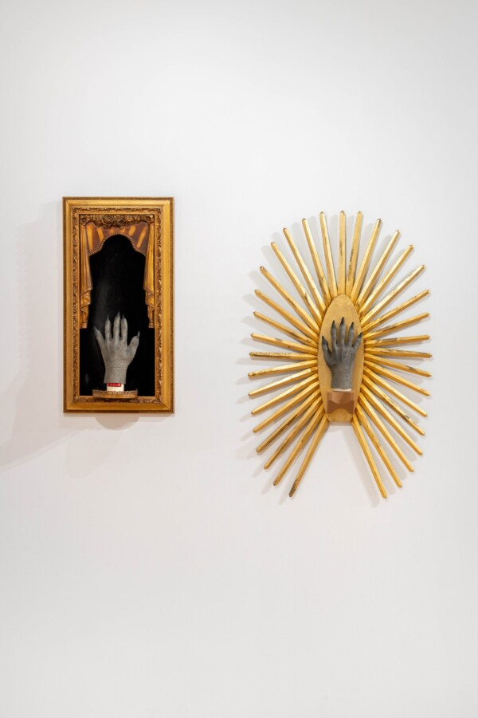

An Ecstatic Evening
An ecstatic evening of varied performances animating the generational legacy of Pros Arts Studio in Chicago’s art scene.
Six voices from the UIC University Choir breathe life into exhibiting artist Leticia Pardo’s whimsical Exquisite Corpse text, a work coauthored by Pros Arts Studio members as part of her plaster cast. Alberto Aguilar and three of his students, Ieva Maria Tersigni, Saoirse Ahumada Furin, and Nico Valentina Mairesse, perform a puppet show that blends body contortion, a fiddle, a clown song, and copyright laws. Jean Carlos Claudio presents Desempacando Identidad, a set of poetry, acrobatics, and bomba music that reflects on his migration from Puerto Rico to the continental US.
ACCESS INFORMATION: This program is free and open to the public. For questions and access accommodations, email gallery400engagement@gmail.com.
ABOUT
Alberto Aguilar is a Chicago-based artist who uses whatever material is at hand in an attempt to make a meaningful connection with the viewer. He does not distinguish his art practice from his other various life roles, which allows him to make work wherever he is. He has shown and presented his work at various museums, galleries, storefronts, homes, and street corners around the world. Some of these include the Queens Museum, El Torito Supermercado, the Minneapolis Institute of Art, the corner of Cesar Chavez Ave and North Broadway in Los Angeles, CA, the Museum of Contemporary Art Chicago, Museo Del Jamón in Madrid, Spain, among others. Along with some members of his family, he collectively organizes Mayfield, a multi-use space which operates on the grounds of his home. He is the recipient of the 3Arts Award.
UIC University Choir is a mixed voice soprano, alto, tenor, and bass ensemble that welcomes all singers on the UIC campus.
Jean Carlos Claudio is a multidisciplinary performer from Caguas, Puerto Rico. They have been performing, teaching, and creating in Chicago since 2016, where they have been established since completing the Actors Gymnasium’s Professional Circus Program. His years of training in Puerto Rico, Chicago, and Argentina have given him a unique and versatile performance style. A skilled tumbler and physical performer, he can easily shift from a quirky clown apt for all ages to an experimental performer fitting for theatre and/or cabarets. Their passion for performing has made them a fixture in the Chicago theatre scene, where they’ve performed with Goodman Theatre, Teatro Vista, Chicago Shakespeare, Midnight Circus, UrbanTheater Co., and Filament Theatre, among others. Claudio is the co-founder of La Vuelta Theatre Lab and a proud member of the Teatro Vista Artistic Collective. In 2018, he got into the Cirque du Soleil database as a clown and physical performer.